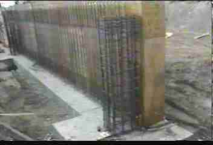
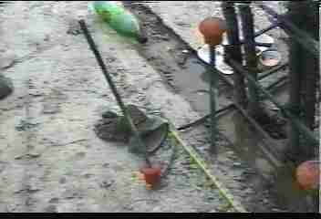
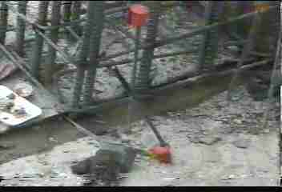
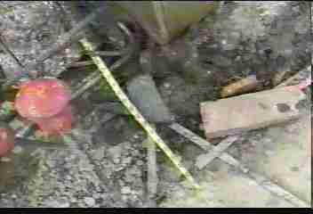
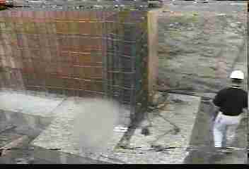

Rebar Accident!

The following images are from video shot during an
investigation of an actual rebar accident
- While standing on a rebar column he is in the process
of plumbing, a worker in full body harness attempts to hook
his positioning lanyards onto a location over his head.
|
 |
- The positioning device hooks slip, and the worker falls
approximately 8 feet to the footings below, where he is
impaled through the groin on a protruding rebar.
|
 |
- Though the rebar is capped, the force of the worker�s
fall pushes the cap clear to the ground, and bends the rebar
nearly 45 degrees.
|
 |
- This is an example of the rebar caps used at this site.
Because it was not steel reinforced, it was insufficient to
provide protection in a fall from elevation.
|
 |
- An employee passing by the accident site gives
perspective to the height involved. The victim was only
standing approximately at the top of this image, yet the
force of his fall bent the rebar like a coat hanger.
Luckily, he was taken by helicopter to a nearby hospital and
survived his injuries.
|
 |
|